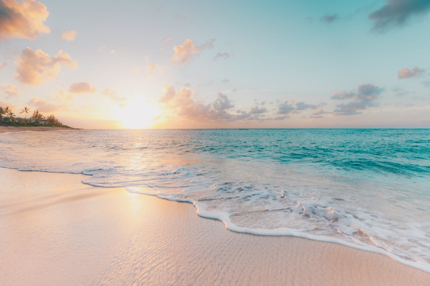

My Favorite Place: The Beach
Where the land meets the sea and time stands still.

There is something deeply restorative about standing at the edge of the ocean. The rhythmic crash of waves, the salty breeze brushing your face, and the endless horizon stretching out before you — the beach is a place where stress simply dissolves.
My favourite beach is a quiet cove that most tourists never find. Soft white sand, clear turquoise water, and the occasional call of a seabird are its only features — and honestly, that is everything.
What Makes the Beach Special
- The calming sound of waves crashing on the shore
- Stunning golden-hour sunsets that paint the sky
- Rich marine life visible through crystal-clear water
- The sense of freedom that only open water can give
- Stargazing with zero light pollution on clear nights
My Perfect Beach Day — Step by Step
- Arrive early to claim a peaceful spot before the crowds
- Set up a hammock between two palm trees
- Swim in the morning when the water is warmest and calmest
- Read a book in the shade during peak afternoon sun
- Walk along the shoreline and look for interesting shells
- Photograph the sunset from the water's edge
- End the day with a beachside meal of fresh seafood
Did You Know? The ocean covers over 70% of the Earth's surface and contains 97% of all water on our planet. Every beach is a doorway into that vast, mysterious world.
Plan Your Beach Visit
- TripAdvisor – Best Beaches – Discover top-rated beaches worldwide
- Surf Spot Finder – Find the perfect wave near you
- NOAA Ocean Service – Learn about ocean science and conservation